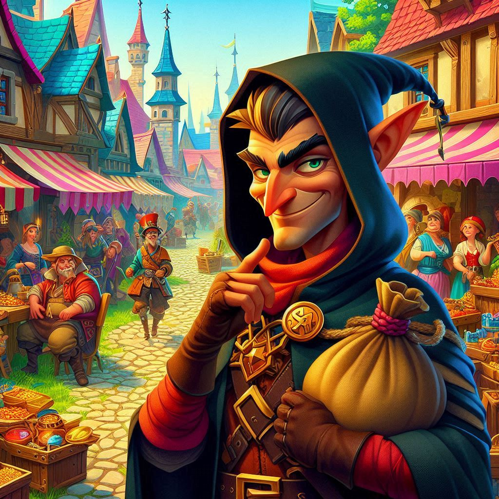

The Soldier background in D&D represents a character with a history of military service. These individuals have honed their combat skills and experienced the discipline, camaraderie, and trials of army life.
The Sage background in D&D represents a character who has dedicated their life to the pursuit of knowledge. These individuals are scholars, researchers, or experts in various fields of study.
The Criminal background in D&D is for characters with a history of breaking the law.